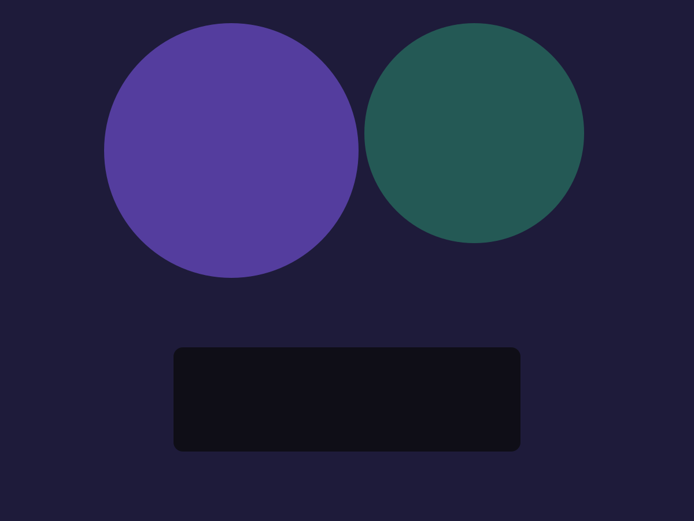

Quotes
Send them from the van.
Components · v2.1, part 2
The second set of v2.1 additions. Each degrades to plain, usable markup without JavaScript.
A circular progress bar. The value is --v-value; the label inside is real text.
The first paragraph is long and gets the button; the second fits and does not.
Long text is cut to four lines here, with a button to show the rest. Without JavaScript the whole text shows, so nothing is ever hidden from someone whose script failed to load. The button only appears when the text really is longer than the limit, and it keeps track as the width changes: make the window narrower and a short paragraph may need the button after all. It says whether the text is open or closed, so a screen reader hears the change as well as seeing it.
A short review fits on its own.
A browser window, a laptop and a phone around a picture. They hold any element: a screenshot or live markup.

Pictures and cards of different heights packed into columns. Resize the window: the column count follows the width.
"Quick, tidy and the price we were quoted."
Radio buttons drawn as stars: arrow keys move the choice, forms submit the value. Hover to preview. Below it, the existing .v-rating shows a fixed score.
One real input drawn as six boxes: paste a code, or let the phone fill it from a text message. It needs no JavaScript.
Swipe, scroll or use the arrow buttons; each press moves one card. It never moves by itself. Without JS the row still scrolls and snaps.
A slow, endless row of names or logos. It pauses while you hover or focus it, and the button stops it. With reduced motion, or without JS, it is a still row.
Nothing loads from the video site until you press play, so there are no cookies or requests before then. Without JS the link opens the video.
Play: Northwind product tour (2:14)Type a skill and press Enter or a comma. Backspace in the empty field removes the last one. Without JS it is a comma-separated text field, and the form gets the same value either way.
Type part of a town: the list filters and marks the match. Arrow keys move, Enter picks, Escape closes. Any text is allowed. Without JS the browser's own suggestions appear.
One form in three steps. Continue checks the step first; Back does not. Without JS every step shows and the form submits as one.
Built from tables, lists and inline SVG, with no chart library. Every chart can be read without seeing it: the bars are a real table, the columns and donut carry their numbers in text.
| Source | Leads |
|---|---|
| Website | 48 |
| Referrals | 30 |
| Google Business | 22 |
12 | |
| Flyers | 4 |
The bar at the very top of this page fills as you scroll (.v-scroll-progress). Below, sections reveal as they scroll into view: staggered cards, from the start and end sides, and scaling. With reduced motion, or in a browser without view timelines, everything simply shows.
Send them from the van.
Your real free slots.
Paid in days, not weeks.
Asked for automatically.
From the start side
.v-reveal .v-reveal-left
From the end side
.v-reveal .v-reveal-right
Growing into place
.v-reveal .v-reveal-scale